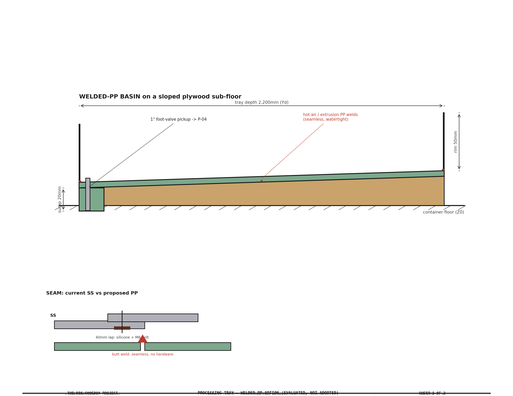
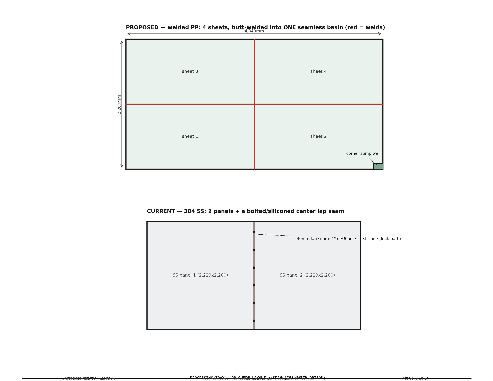

Processing Tray — Material Research & Decision Record¶
Outcome: the 304 stainless tray is retained. This record captures the alternatives evaluated (welded polypropylene, and a liner on a sub-structure), their construction and cost, and why stainless was kept — so the reasoning is available if the question is reopened.
1. Why the tray was reviewed¶
At ~$1,583–2,271 the processing tray is the largest single reducible line in the water system — stainless was chosen originally for rigidity and finish, not chemistry (the cyanotype wash — dilute ferric ammonium oxalate / potassium ferricyanide / citric acid, no chloride — is inert on almost any plastic). That made a cheaper material worth checking.
2. What the tray actually has to do¶
Per its design goals, the tray is a catch / drain pan, not a soaking basin:
- Contain all wash water — no penetration of the container floor.
- Drain to a corner sump for pump-out + recycling.
- Provide a rigid surface that simplifies handling the large (4,389 × 2,094 mm) print.
- Permanently installed; a leak is a serious failure (water loose in the container).
Prints are washed on the film plane by the spray bar; they are not soaked in the tray. The rigid-surface requirement is the one that ends up deciding the material.
3. Options evaluated¶
The two redesigns share one idea — a sloped sub-structure carrying a thin watertight surface that falls 1:200 to the corner sump. They differ only in that surface: a welded-PP skin or a draped liner.


| Option | Watertight surface | Sub-structure | Fabrication |
|---|---|---|---|
| A. 304 SS (retained) | 2× 16-ga panels + bolted/siliconed lap seam | 5 HDPE slope shims | metal shop: cut, brake, weld sump |
| B. Welded PP | 3/16" PP, butt-welded seamless | sloped exterior-ply sub-floor | hot-air / extrusion plastic welding |
| C. Liner | drape-in EPDM or RPE, chemical-safe | sloped exterior-ply frame + rim | none (drape-in, no welding) |
4. Cost¶
| Option | Tray total | vs SS | Note |
|---|---|---|---|
| A. 304 SS (retained) | $1,583–2,271 | — | rigid, premium #4 finish; proven |
| B. Welded PP | $935–1,263 (self-weld) / $1,335–1,963 (shop) | save ~$550–920 / ~$150–220 | PP sheet ($258/sheet, US Plastic) is not cheaper than SS; saving is fabrication only, and hinges on who welds |
| C. Liner | ~$220–450 | save ~$1,150–1,850 | cheapest, but a flexible liner — not a rigid surface |
The often-quoted "SS→PP saves $1,000–1,400" does not hold: PP sheet costs about the same as SS and needs a sub-floor. The only large saving (Option C) comes from dropping to a liner, which fails the rigid-surface requirement.
5. Cheaper stainless surfaces (the retained-material lever)¶
With a rigid surface required, the material choice narrowed to A vs B, and SS was kept (§6). Within stainless, the surface finish is a clean cost lever — the tray is a drain pan, not a showpiece:
- #4 brushed → 2B mill finish. The #4 brush is a cosmetic upcharge (a 150–180
grit directional grain); 2B is the standard bright cold-rolled finish and is
functionally identical for a drain pan. Dropping to 2B saves an estimated
~$110–300 on the sheet with no loss of rigidity or corrosion resistance —
firm at a 2B-vs-#4 quote (Metal Supermarkets,
Coremark). Adopted 2026-08-02 —
tray-ss-sheetre-spec'd to 2B mill finish (sheet $720–1,000 → $610–850 est; firm at quote). - Gauge — keep 16-ga. 18-ga (.048") is ~20% less material but noticeably softer; since the rigid surface was the deciding requirement, the thinner gauge is rejected.
- Grade — keep 304. 201 SS is cheaper (less nickel) but work-hardens and is less corrosion-resistant; 304 is already the audited splash-zone choice and stays.
So the retained-material saving is the 2B finish downgrade — modest, zero-risk, and it keeps every property that mattered.
6. Decision & rationale — why stainless¶
A rigid surface was required (it simplifies handling the large print), which removes the liner (Option C) despite its big saving. The choice was therefore SS vs welded PP, decided on fabrication, procurement, and skills:
- Fabrication / skills. SS is a known, outsourced process — hand a shop a drawing, get a finished rigid part. PP's saving only materializes if we do the hot-air/extrusion welding — a new skill learned on a large, critical, watertight basin, where a bad weld leaks. Shop-welded PP saves only ~$150–220, which does not justify a redesign.
- Leak stakes. The "no floor penetration" requirement raises the cost of a first-time self-welded basin; the proven SS bolted/siliconed detail is the lower-risk path.
- Surface. 16-ga SS is rigid and hard-wearing — the better working surface for the print, and durable over the camera's life.
- Procurement was a wash — both are order-a-sheet items.
Retained: 304 SS, with the 2B mill finish as the surface trim (from the premium #4), for an estimated ~$110–300 saving at no functional cost. The $1,000-plus saving of a plastic surface is only available by giving up rigidity (Option C), which the print-handling requirement does not allow.